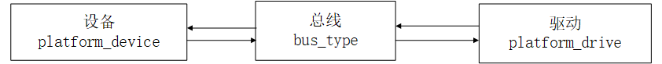
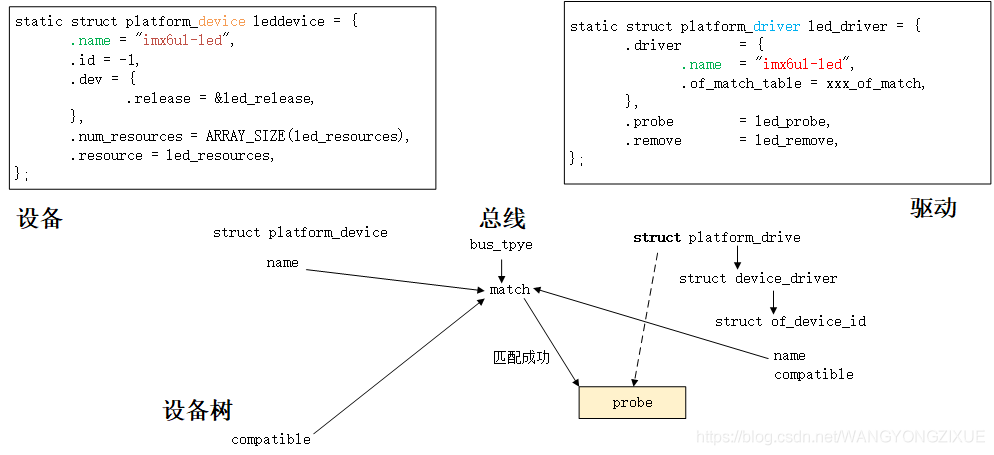

README
linux platform设备驱动介绍。
refers
驱动分离简介
一套标准的驱动框架
Linux 中的总线(bus)、驱动(driver)和设备(device)模型，也就是常说的驱动分离。
Linux 内核中大量的驱动程序都采用总线、驱动和设备模式。如 I2C、 SPI、 USB 等总线。但是在 SOC 中有些外设是没有总线这个概念的，但是又要使用总线，为了解决此问题， Linux 提出了 platform 这个虚拟总线，相应的就有 platform_driver 和 platform_device。
驱动设备匹配过程：设备和驱动通过总线双向查找 
当我们向系统注册一个驱动的时候，总线就会在右侧的设备中查找，看看有没有与之匹配的设备，如果有的话就将两者联系起来。同样的，当向系统中注册一个设备的时候，总线就会在左侧的驱动中查找看有没有与之匹配的设备，有的话也联系起来。
详细匹配框图
分为两种：1、有设备树情况下，使用compatible属性；2、无设备树情况 使用.name属性 
platform驱动
驱动结构体
struct platform_driver {
int (*probe)(struct platform_device *);
int (*remove)(struct platform_device *);
void (*shutdown)(struct platform_device *);
int (*suspend)(struct platform_device *, pm_message_t state);
int (*resume)(struct platform_device *);
struct device_driver driver;
const struct platform_device_id *id_table;
bool prevent_deferred_probe;
};
解析
1）包含结构体device_driver，相当于是platform_driver 的基类
2）platform_device_id 一种匹配方式
3）驱动主要实现probe函数，此函数在匹配后执行，非常重要！！！
struct device_driver {
const struct of_device_id *of_match_table;
}
struct of_device_id {
char name[32];
char type[32];
char compatible[128];
const void *data;
};
static const struct of_device_id xxx_of_match[] = {
{
.compatible = "imx6ul-led" },
{ /* Sentinel */ }
};
/* platform驱动结构体 */
static struct platform_driver led_driver = {
.driver = {
.name = "imx6ul-led", /* 驱动名字，用于和设备匹配 */
.of_match_table = xxx_of_match,
},
.probe = led_probe,
.remove = led_remove,
};
platform设备
struct platform_device {
const char *name;
int id;
bool id_auto;
struct device dev;
u32 num_resources;
struct resource *resource;
...
}
解析：
1）name与驱动的 name 字段相同，才能匹配
2）resource 表示资源，也就是设备信息，比如外设寄存器等
struct resource {
resource_size_t start;
resource_size_t end;
const char *name;
unsigned long flags;
struct resource *parent, *sibling, *child;
};
说明：start 和 end 分别表示资源的起始和终止信息，对于内存类的资源，就表示内存起始和终止地址， name 表示资源名字， flags 表示资源类型。
实例
#define CCM_CCGR1_BASE (0X020C406C)
#define REGISTER_LENGTH 4
static struct resource led_resources[] = {
[0] = {
.start = CCM_CCGR1_BASE,
.end = (CCM_CCGR1_BASE + REGISTER_LENGTH - 1),
.flags = IORESOURCE_MEM,
},
}
platform设备结构体
/*platform设备结构体 */
static struct platform_device leddevice = {
.name = "imx6ul-led",
.id = -1,
.dev = {
.release = &led_release,
},
.num_resources = ARRAY_SIZE(led_resources),
.resource = led_resources,
};
platform总线
/*总线结构体*/
struct bus_type platform_bus_type = {
.name = "platform",
.dev_groups = platform_dev_groups,
.match = platform_match,
.uevent = platform_uevent,
.pm = &platform_dev_pm_ops,
};
platform_match
static int platform_match(struct device *dev,struct device_driver *drv)
{
struct platform_device *pdev = to_platform_device(dev);
struct platform_driver *pdrv = to_platform_driver(drv);
/*When driver_override is set,only bind to the matching driver*/
if (pdev->driver_override)
return !strcmp(pdev->driver_override, drv->name);
/* 1、设备树采用的匹配方式，device_driver 结构体中有个名为of_match_table的成员变量，此成员变量保存着驱动的compatible匹配表 与 设备树中的每个设备节点的 compatible 属性匹配*/
if (of_driver_match_device(dev, drv))
return 1;
/* 2、ACPI 匹配方式 */
if (acpi_driver_match_device(dev, drv))
return 1;
/*3、id_table 匹配 */
if (pdrv->id_table)
return platform_match_id(pdrv->id_table, pdev) != NULL;
/* 4、直接匹配驱动和设备的name */
return (strcmp(pdev->name, drv->name) == 0);
}
驱动和设备的匹配有四种方法,已经在程序中注释。
加载platform驱动
int platform_driver_register (struct platform_driver *driver)
卸载platform驱动
void platform_driver_unregister(struct platform_driver *drv)
设备树下的 platform 驱动
platform 驱动框架分为总线、设备和驱动，其中总线不需要我们这些驱动程序员去管理，这个是 Linux 内核提供的，我们在编写驱动的时候只要关注于设备和驱动的具体实现即可。在没有设备树的 Linux 内核下，我们需要分别编写并注册 platform_device 和 platform_driver，分别代表设备和驱动。在使用设备树的时候，设备的描述被放到了设备树中，因此 platform_device 就不需要我们去编写了，我们只需要实现 platform_driver 即可。
1、在设备树中创建设备节点
gpioled {
#address-cells = <1>;
#size-cells = <1>;
compatible = "atkalpha-gpioled";
pinctrl-names = "default";
pinctrl-0 = <&pinctrl_led>;
led-gpio = <&gpio1 3 GPIO_ACTIVE_LOW>;
status = "okay";
};
compatible 属性值为“atkalpha-gpioled”
2、编写 platform 驱动的时候要注意兼容属性
static const struct of_device_id leds_of_match[] = {
{ .compatible = "atkalpha-gpioled" }, /* 兼容属性 */
{ /* Sentinel */ }
}
MODULE_DEVICE_TABLE(of, leds_of_match);
/* platform驱动结构体 */
static struct platform_driver led_driver = {
.driver = {
.name = "imx6ul-led", /* 驱动名字，用于和设备匹配 */
.of_match_table = leds_of_match,
},
.probe = led_probe,
.remove = led_remove,
};
.compatible 与设备树中的兼容性一致。
驱动程序
#include <linux/types.h>
#include <linux/kernel.h>
#include <linux/delay.h>
#include <linux/ide.h>
#include <linux/init.h>
#include <linux/module.h>
#include <linux/errno.h>
#include <linux/gpio.h>
#include <linux/cdev.h>
#include <linux/device.h>
#include <linux/of_gpio.h>
#include <linux/semaphore.h>
#include <linux/timer.h>
#include <linux/irq.h>
#include <linux/wait.h>
#include <linux/poll.h>
#include <linux/fs.h>
#include <linux/fcntl.h>
#include <linux/platform_device.h>
#include <asm/mach/map.h>
#include <asm/uaccess.h>
#include <asm/io.h>
#define LEDDEV_CNT 1 /* 设备号长度 */
#define LEDDEV_NAME "dtsplatled" /* 设备名字 */
#define LEDOFF 0
#define LEDON 1
/* leddev设备结构体 */
struct leddev_dev{
dev_t devid; /* 设备号 */
struct cdev cdev; /* cdev */
struct class *class; /* 类 */
struct device *device; /* 设备 */
int major; /* 主设备号 */
struct device_node *node; /* LED设备节点 */
int led0; /* LED灯GPIO标号 */
};
struct leddev_dev leddev; /* led设备 */
void led0_switch(u8 sta)
{
if (sta == LEDON )
gpio_set_value(leddev.led0, 0);
else if (sta == LEDOFF)
gpio_set_value(leddev.led0, 1);
}
static int led_open(struct inode *inode, struct file *filp)
{
filp->private_data = &leddev;
return 0;
}
static ssize_t led_write(struct file *filp, const char __user *buf, size_t cnt, loff_t *offt)
{
int retvalue;
unsigned char databuf[2];
unsigned char ledstat;
retvalue = copy_from_user(databuf, buf, cnt);
if(retvalue < 0) {
printk("kernel write failed!\r\n");
return -EFAULT;
}
ledstat = databuf[0];
if (ledstat == LEDON) {
led0_switch(LEDON);
} else if (ledstat == LEDOFF) {
led0_switch(LEDOFF);
}
return 0;
}
/* 设备操作函数 */
static struct file_operations led_fops = {
.owner = THIS_MODULE,
.open = led_open,
.write = led_write,
};
static int led_probe(struct platform_device *dev)
{
printk("led driver and device was matched!\r\n");
/* 1、设置设备号 */
if (leddev.major) {
leddev.devid = MKDEV(leddev.major, 0);
register_chrdev_region(leddev.devid, LEDDEV_CNT, LEDDEV_NAME);
} else {
alloc_chrdev_region(&leddev.devid, 0, LEDDEV_CNT, LEDDEV_NAME);
leddev.major = MAJOR(leddev.devid);
}
/* 2、注册设备 */
cdev_init(&leddev.cdev, &led_fops);
cdev_add(&leddev.cdev, leddev.devid, LEDDEV_CNT);
/* 3、创建类 */
leddev.class = class_create(THIS_MODULE, LEDDEV_NAME);
if (IS_ERR(leddev.class)) {
return PTR_ERR(leddev.class);
}
/* 4、创建设备 */
leddev.device = device_create(leddev.class, NULL, leddev.devid, NULL, LEDDEV_NAME);
if (IS_ERR(leddev.device)) {
return PTR_ERR(leddev.device);
}
/* 5、初始化IO */
leddev.node = of_find_node_by_path("/gpioled");
if (leddev.node == NULL){
printk("gpioled node nost find!\r\n");
return -EINVAL;
}
leddev.led0 = of_get_named_gpio(leddev.node, "led-gpio", 0);
if (leddev.led0 < 0) {
printk("can't get led-gpio\r\n");
return -EINVAL;
}
gpio_request(leddev.led0, "led0");
gpio_direction_output(leddev.led0, 1); /* 输出，高电平 */
return 0;
}
static int led_remove(struct platform_device *dev)
{
gpio_set_value(leddev.led0, 1); /* 卸载驱动的时候关闭LED */
cdev_del(&leddev.cdev);
unregister_chrdev_region(leddev.devid, LEDDEV_CNT); /* 注销设备号 */
device_destroy(leddev.class, leddev.devid);
class_destroy(leddev.class);
return 0;
}
/* 匹配列表 */
static const struct of_device_id led_of_match[] = {
{ .compatible = "atkalpha-gpioled" },
{ /* Sentinel */ }
};
/* platform驱动结构体 */
static struct platform_driver led_driver = {
.driver = {
.name = "imx6ul-led", /* 驱动名字，用于和设备匹配 */
.of_match_table = led_of_match, /* 设备树匹配表 */
},
.probe = led_probe,
.remove = led_remove,
};
static int __init leddriver_init(void)
{
return platform_driver_register(&led_driver);
}
static void __exit leddriver_exit(void)
{
platform_driver_unregister(&led_driver);
}
module_init(leddriver_init);
module_exit(leddriver_exit);
MODULE_LICENSE("GPL");
MODULE_AUTHOR("wyong");